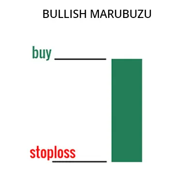

புல்லிஷ் மாருபோஜை முறைமை ஒரு வணிகம் முறைமையாகும், இது மார்க்கெட்டின் கீழ்வழியான
பாதிப்பை முடிக்க, மேல்வழி நாடுகையைக் குறிப்பிடுகின்றது. இந்த முறைமை ஒரு பெரிய,
நீளமான மொழிகுடன் உருவாகின்றது, இதன் துவக்க மற்றும் மூடுதல் விலை
ஒன்றுக்கு ஒன்று சமமாக இருக்கின்றது.